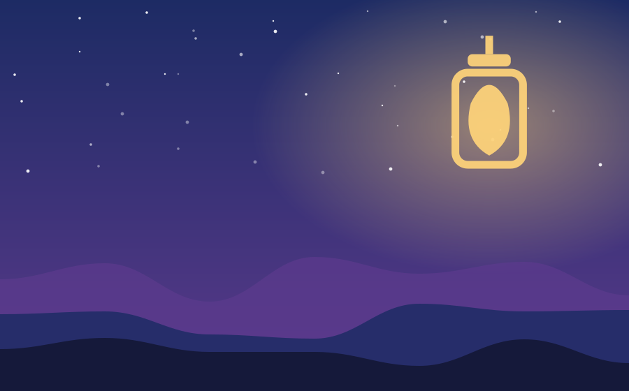

Chapter 1 of 1
The Last Light of Elderfen

Every dusk, Wren climbed the two hundred steps of the old lantern tower, because the village believed its light was the only thing keeping the Hollow Mist from drifting out of the marsh. Wren was twelve, the youngest keeper in a hundred years, and she suspected the grown-ups had given her the job because nobody else wanted it.
Tonight the flame guttered blue. From inside the glass, a small voice said, "You're late." Wren dropped her matchbox. The flame was not a flame at all, but a tiny fox made of light, curled around the wick like a sleeping cat. "The mist isn't a monster," it yawned. "It's lonely. It comes toward the light because everything lost does."
Wren looked out. Below, the Hollow Mist rolled over the reeds, and inside it she saw faces: a fisherman who never came home, a lost lamb, someone's half-remembered lullaby. She opened the lantern door and, with trembling hands, held it wide. The mist poured in, soft as breath, and the fox grew brighter with every memory it held.
By dawn the marsh was clear and the lantern glowed gold instead of blue. Wren still climbs the stairs every dusk, but now she brings a blanket, a flask of cocoa, and plenty of time to listen.
— The End —